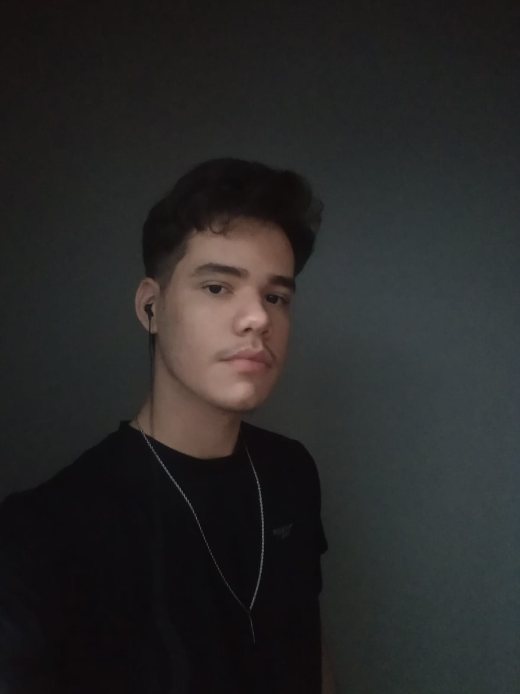

Sobre Mim
Sou Felipe Menezes Lins, um desenvolvedor full-stack dedicado a criar interfaces interativas, eficientes e com funcionalidades simples. Tenho experiência em HTML, CSS, JavaScript, Python e Banco de Dados, trabalho com Django e estou constantemente aprimorando minhas habilidades em novas tecnologias. Meu objetivo é desenvolver soluções inovadoras e contribuir para o sucesso dos meus clientes.

Meus Projetos
Netflix - projeto
Projeto recente desenvolvido em 2 dias, inspirado na interface da Netflix (sem vínculo com a marca). Focado em responsividade, consumo de APIs e design moderno, utilizando HTML, CSS, JavaScript e Django. Representa meu avanço como desenvolvedor, unindo front-end e back-end em uma experiência fluida e atual.
Ver ProjetoStar Coffe
O Star Coffe foi um dos meus primeiros projetos como programador, criado quando ainda não tinha experiência com back-end. Desenvolvido com HTML, CSS e JavaScript, o foco foi em responsividade, manipulação do DOM e animações de menu. Esse projeto marcou o início da minha jornada como desenvolvedor front-end.
Ver ProjetoContato
Entre em contato para discutir possíveis colaborações ou oportunidades de trabalho.
- Email: felipemenezesmk22@gmail.com
- Telefone: +55 19 99672-3460
- GitHub: github.com/felipemenezeslins